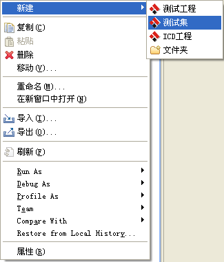
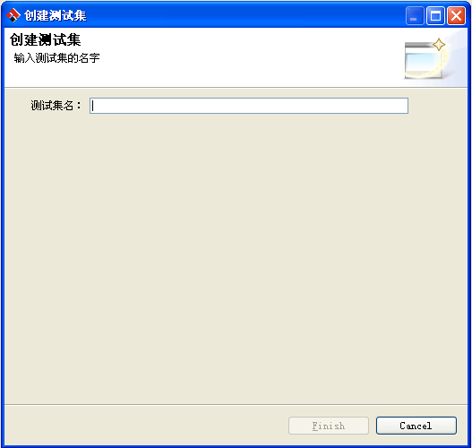
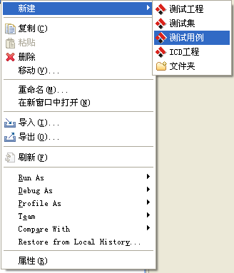
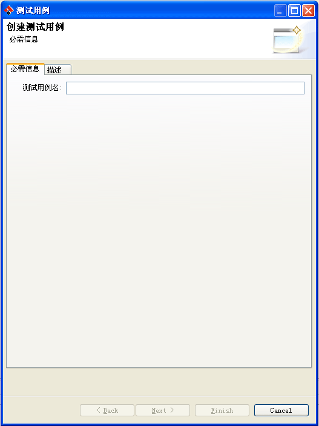
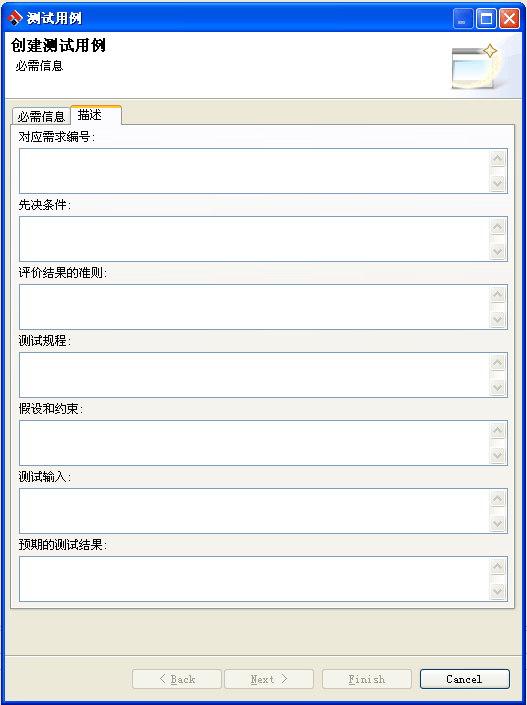
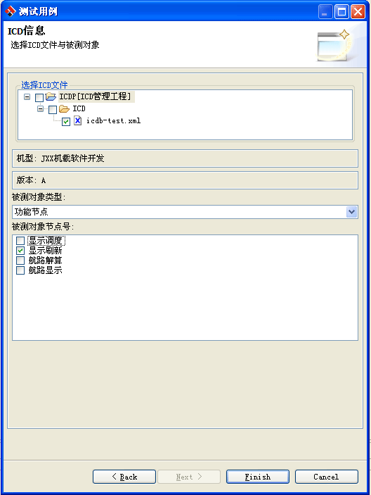
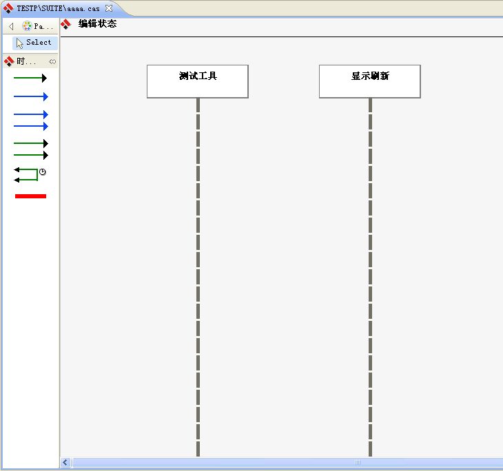
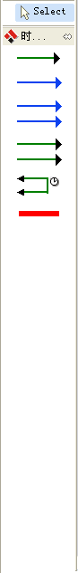
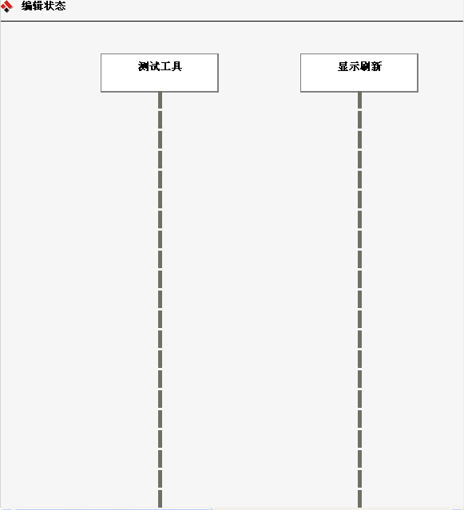

测试用例介绍
测试用例是一组消息的集合，在用例中定义了消息执行的前后顺序。用例除了包含消息以外还包含测试说明、判断准则、注释等信息。创建测试集合
测试集合用于逻辑组织测试用例。测试集合中可以包含测试集合。-
将鼠标移动到工程视图中的测试工程上，点击鼠标右键，从弹出的菜单(如下图所示)中选择新建->测试集
，系统会弹出一个创建测试集的对话框。

-
在弹出对话框（如下图所示）中输入测试用例的名字，然后点击Finish按钮，系统会在对应的测试工程中创建同名的文件夹。

创建测试用例
-
将鼠标移动到测试集合上，点击鼠标右键，从弹出的菜单中选择新建->测试用例（如下图所示），然后系统会弹出一个创建测试用例的
对话框

-
在弹出的对话框中（如下图1所示），输入测试用例的名字，然后切换到描述页中（如下图2所示）输入测试用例描述信息，描述信息在生成测试报告时会被使用。

图1
图2
-
点击Next按钮，跳转到选择ICD文件的页面（如图3所示），在此页面中系统为用户列出了当前工作空间下的所有ICD文件，
用户需要在这些文件当中选择一个，然后系统会为用户展示出此ICD文件所包含的所有节点信息，用户需要从这些节点中选择
一个或多个作为被测对象。然后点击Finish按钮，系统会为用户生成一个测试用例文件并在编辑器中自动打开，如图4所示。图3
图4
编辑测试用例
-
编辑界面介绍
-
图元介绍
-
普通消息图元
编辑界面(如图5所示)由两部分组成，左边部分为编辑器右边部分为消息视图。编辑器由两部分组成，左边部分为消息图元（如图6所示），包括普通消息、并行消息、周期消息、背景周期消息、时间间隔、注释， 用户可以使用这些图元在右边的编辑器（如图7所示）中创建出对应的消息图形。消息视图（如图8所示）为用户展示了整个ICD节点中所有的消息，用户可以从消息视图中拖拽消息到编辑器中，编辑器会根据一定 的规则为用户创建对应的消息对象，如果用户拖拽的消息不符合规则，则拒绝创建消息。
图5

图6

图7

图8
用户可以使用普通消息图元在编辑器中创建